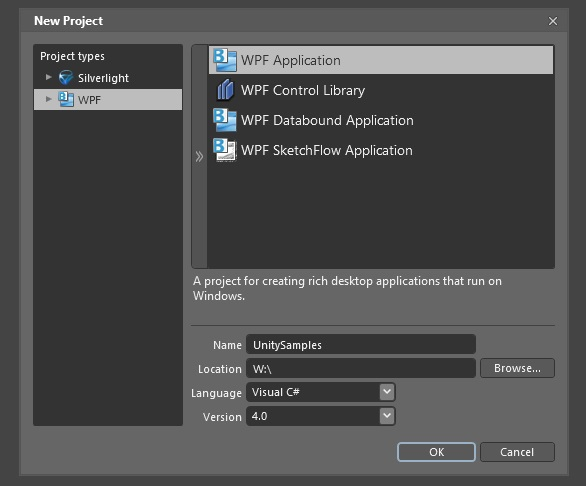
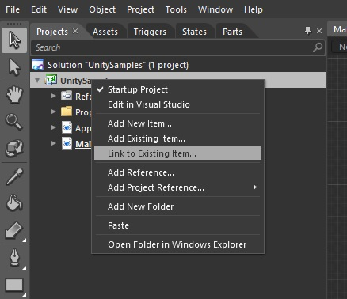
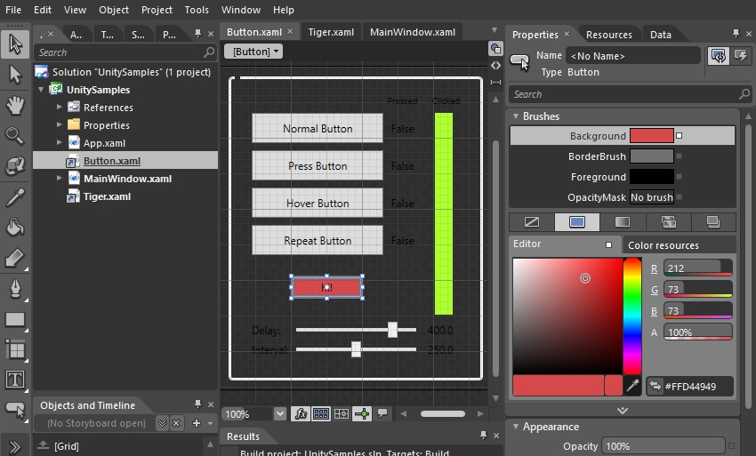
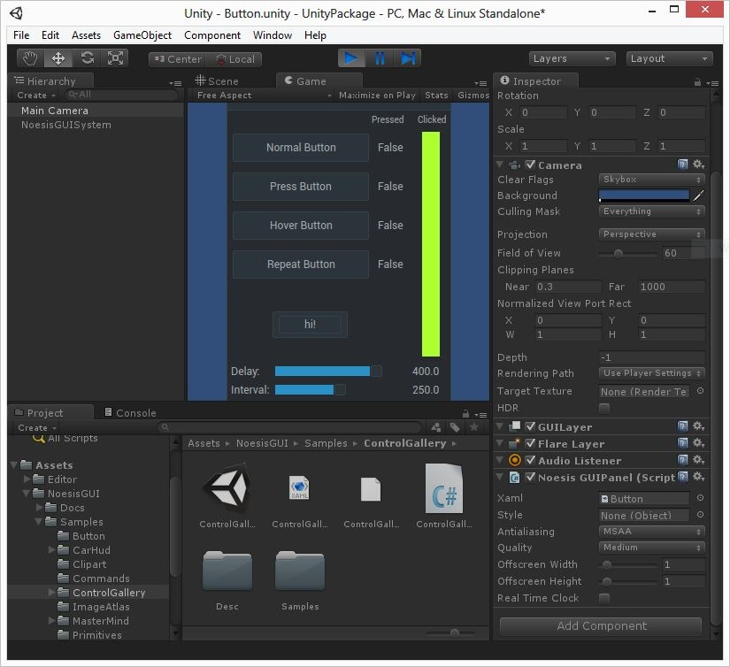
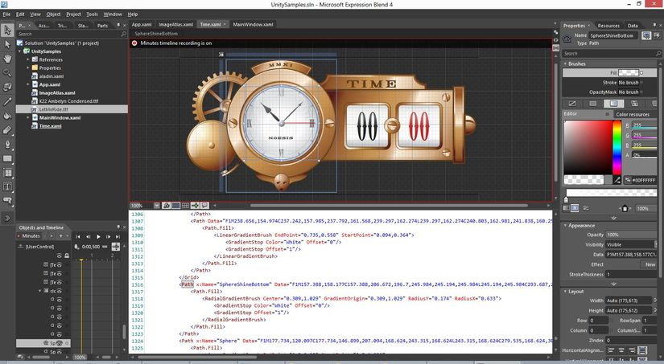

First contact with Blend
This tutorial is a fast introduction to Microsoft Blend within Unity. You will learn how to start editing the samples included in NoesisGUI and how to create new ones from scratch. Microsoft Blend for Visual Studio (formerly Microsoft Expression Blend) is an interactive, WYSIWYG front-end for designing XAML-based interfaces.
Note
This is a very introductory tutorial on Blend. A more advanced one can be found in the Blend Native Tutorial
Project creation
The first thing to do is creating a new project of type WPF Application. It is very important that this project is created outside the Unity project because .cs files created by Blend are not compatible with Unity.
Note
Although an WPF Application is enough most of the times, if you are using UIElement.Projection you need to create a SilverLight Application because unfortunately this doesn't exist in WPF 3.5 or 4
Add XAMLs to project
By default, Blend creates several .xaml files inside the project that we can ignore because we are not really interested in creating a native application with Blend. For us, Unity is the application.
Next step is adding desired .xaml files to our project. To do that, we use the option Link to Existing Item... to avoid duplicating the files from our Unity project.
For example, let's add the following sample included in NoesisGUI Unity Package:
- Assets/NoesisGUI/Samples/ControlGallery/Samples/Button.xaml
As soon as the new .xaml is added it is previsualized by Blend and you can start editing it. For example, let's add a new button.
As we linked the .xaml instead of copying, each time we save the .xaml file in Blend it is automatically updated in the Unity editor. This provides rapid iteration cycles between Blend and Unity.
Dependencies from the linked .xaml must be added to the project too. For example, the sample ImageAtlas.xaml uses a sprites atlas that is stored in the shared dictionary Images/Aladin/aladin.xaml. We must link to this file to avoid errors from Blend when visualizing it.
Note
As you can see in this sample, images are automatically located without needing to add them to the project
The same happens with font resources. We need to link to the corresponding .ttf files. For instance, the sample Time.xaml needs the fonts LetMeRide.ttf and K22 Ambelyn Condensed.ttf. As soon as we add those files to the project the XAML is properly displayed in the Blend editor.
